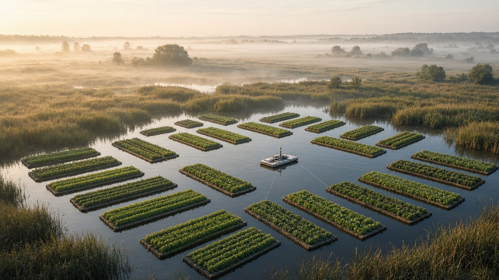

Ich suche Partner, die den ersten 10-ha-Pilot im Havelländischen Luch mit mir umsetzen – mit Kapital, Fläche, Know-how oder Abnahme. Das Modell ist auf Gewinn ausgelegt: Die nasse Fläche soll mehr einbringen als die heutige entwässerte – und dabei Klima, Wasser und Artenvielfalt stärken.
Melioration stilllegen, Wasser halten, und die nasse Fläche dreifach nutzen: Paludikultur mit Wasserbüffeln (≈ 70 %), Teich mit Fisch und schwimmenden Äckern im wöchentlich rotierenden Lichtfenster-Mosaik (≈ 20 %), Ländchen mit Hof, Wegen und Anlegern (≈ 10 %) – Gehölze wachsen an den Rändern von selbst nach. Absatz über den Berliner Markt: Gastronomie, Hofläden, Abo-Kisten.
| konservativ | mittel | optimistisch | |
|---|---|---|---|
| Investition gesamt | 508.000 € | 345.500 € | 183.000 € |
| Zuschüsse | 291.000 € | 256.150 € | 149.500 € |
| Eigenanteil | 217.000 € | 89.350 € | 33.500 € |
| Erträge pro Jahr | 14.450 € | 36.230 € | 72.510 € |
| Kosten pro Jahr | 30.000 € | 23.000 € | 16.500 € |
| Überschuss pro Jahr | − 15.550 € | 13.230 € | 56.010 € |
| Amortisation Eigenanteil | nicht gegeben | ≈ 7 Jahre | ≈ 7 Monate |
Vor Abschreibung und Steuern, ohne Grunderwerb. Skalierung: Auf 50 ha (5 Module, gemeinsame Deiche) sinkt die Investition je Modul um 15–30 %; bei gesichertem Absatz hält das Dossier 60.000–80.000 € Überschuss pro Jahr für plausibel. Alle Werte sind Planungsannahmen in Bandbreiten.
Planung, Gutachten, Dränverschluss, Deiche, Stauanlagen, Messnetz – zu großen Teilen förderfähig (ANK-Moorbodenschutz, Landesrichtlinie).
Teich/Tiefenzone, 1.000 m² Schwimmbeete, Seilführung und Stege, Saatgut, Fischbesatz – teilweise förderfähig (EMFAF), Rest Eigenmittel.
Weidezaun, Tränke, Unterstand für Wasserbüffel, Hecken- und Gehölzpflanzung.
Monitoring von Emissionen, Wasser, Arten und Erträgen; DBU-Projektskizze in Vorbereitung.
Daniel Seyffarth, Berlin – Gründer der Staracces UG, Erfinder und Konzeptautor. Sechs Jahre im Havelland, fünf davon auf einem alten Großbauernhof, ein Jahr Arbeit in einer LPG. Das Konzept ist offen publiziert (CC BY 4.0) und wurde von Fachleuten der HNEE Eberswalde positiv aufgenommen.
✉️ Gespräch vereinbaren Projektseite Dossier (PDF)